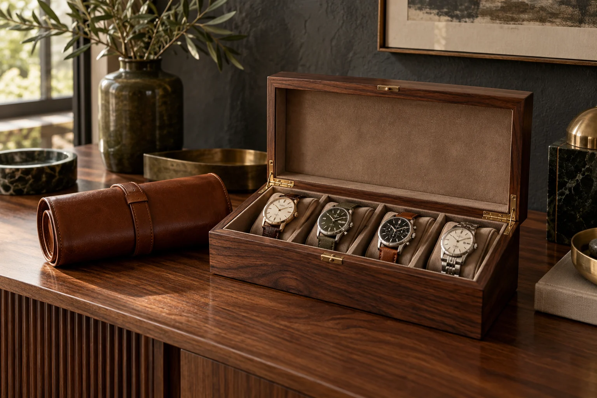
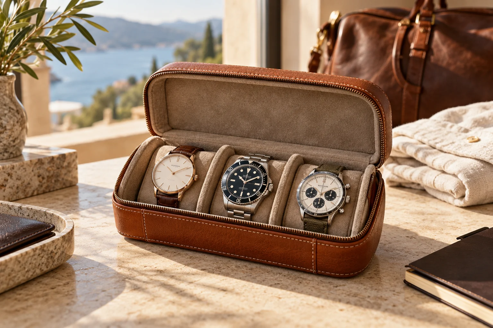
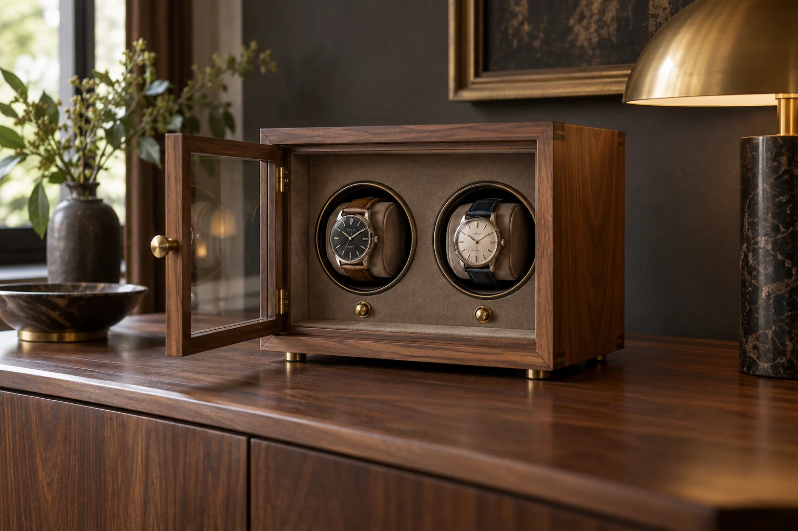
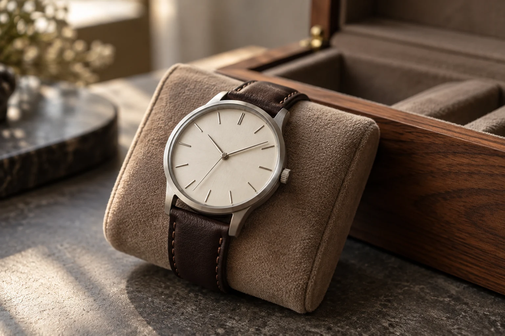
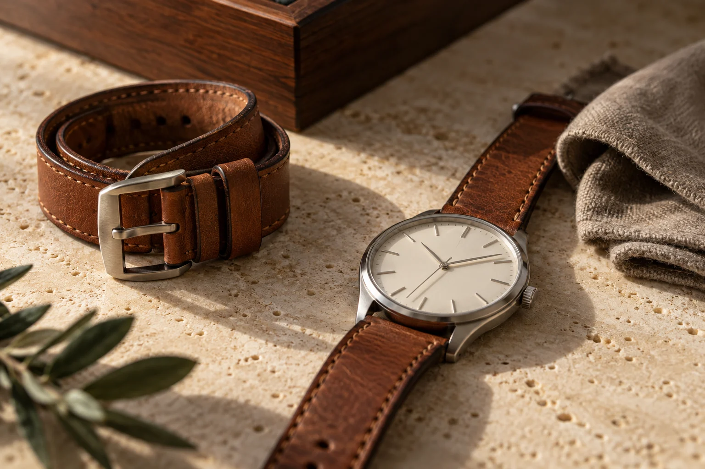

EXPLORE THE BRANDS
Independent comparisons of brands in our collection.
FOR THE WAY YOU COLLECT
A place for every
timepiece.
Thoughtful storage. Effortless travel.
A collection, beautifully considered.

THE EVERYDAY RITUAL
Made for how you keep time.
Storage & display
Give your collection a home ↗
Travel companions
Take a little of your collection ↗
Winding, considered
Convenience for automatic watches ↗Original AI-created lifestyle scenes. These illustrate categories, not exact products.
THE CURATED COLLECTION
Find your next keeper.
Compare the details that matter.
Choose the piece that belongs.
Reference prices checked October 21, 2026; confirm price, variant and stock at merchant. Exact-product photography awaits permission. Current links are ordinary merchant links; no affiliate tracking is active.
A LITTLE GUIDANCE
Your collection.
Your way.
A few thoughtful questions to find storage that suits the watches you own—and the space you have.
No account. No serial numbers. Your requirements stay in this browser when saved.

A CHANGE OF SCENE
Good company.
Wherever you go.
The right travel case starts with the watches you want to take. Consider separation, cushion fit and the room left in your bag.
Original AI-created lifestyle scene
COLLECTOR NOTES
Consider the details.
Useful guidance, without the guesswork.

COLLECT WELL. KEEP WELL.